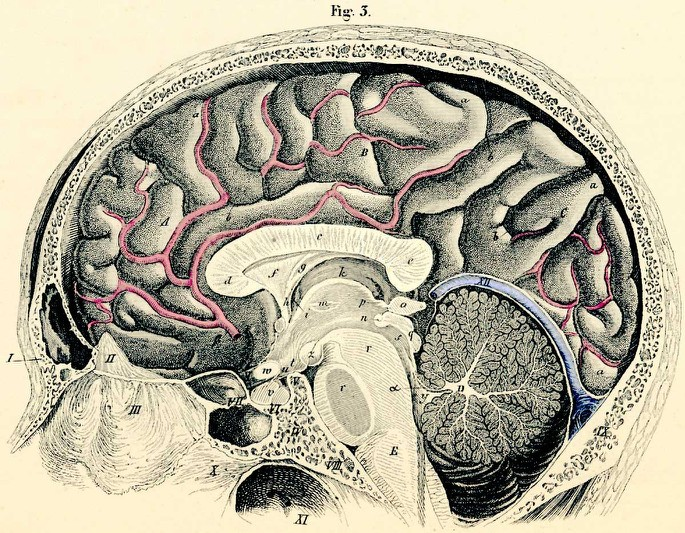

Supplement to Descartes and the Pineal Gland
Figure 1

Figure 1. The Pineal Gland. Sagittal section of brain, view from the left, the surface of the medial half of the right side is seen. Source: Professor Dr. Carl Ernest Bock, Handbuch der Anatomie des Menschen, Leipzig 1841. From a scan originally published at: Anatomy Atlases (edited).
- Frontal bone (with frontal sinus).
- Crista galli (of ethmoidal bone).
- Perpendicular lamina of the ethmoid bone.
- Body of the ethmoid bone.
- Back of the sella turcica (posterior clinoid process).
- Sella turcica.
- Sphenoid sinus.
- Basilar part of the occipital bone (with the fossa for medulla oblongata).
- Vomer.
- Pharynx.
- Tentorium cerebelli (with confluence of sinuses and opened great cerebral vein of Galen).
| A. | Anterior (Frontal) cerebral lobe. |
| B. | Middle (Parietal) cerebral lobe. |
| C. | Posterior (Parietal) cerebral lobe. |
| D. | Medulla oblongata. |
| a. | gyri. |
| b. | sulci (furrow between gyri). |
| c. | corpus callosum (body). |
| d. | genu of corpus callosum. |
| e. | corpus callosum, splenium. |
| f. | septum pellucidum. |
| g. | fornix (body). |
| h. | fornix column. |
| i. | foramen of Munro. |
| k. | thalamus (optic thalamus). |
| l. | anterior commissure. |
| m. | interthalamic adhesion. |
| n. | posterior commissure. |
| o. | pineal gland. |
| p. | stalk of pineal gland (crus glandulae pinealis). |
| q. | corpora quadrigemina. |
| r. | pons Varoli. |
| s. | aqueduct of Sylvius. |
| t. | tuber cinereum. |
| u. | infundibulum. |
| v. | pituitary gland (hypophysis). |
| w. | optic chiasm. |
| x. | optic nerve. |
| y. | fourth ventricle. |
| z. | mamillary body. |
| α) | anterior cerebellar valvule. |
| β) | anterior cerebral artery. |